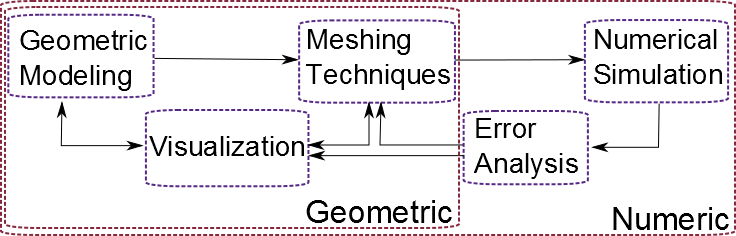

Overview of my Research Area
Simulation science is usually driven by the solution to partial differential
equations (PDEs) using the finite element (FE) method.
A computational pipeline that facilitates computer-aided engineering (CAE) typically
involves following stages: geometric modeling, mesh generation, numerical
simulation, error analysis, mesh adaptation, and visualization.
My research has focused on numeric and geometric aspects
of scientific and high performance computing in most of the stages of the
pipeline (see the figure below).
As the first step in CAE, geometric models are obtained from specialized software,
image data, or other sources. These models are discretized to construct surface
and volume meshes to solve discretized forms of PDEs. High-quality meshes are necessary
for the stability and efficiency of an FE solver and the accuracy of the associated PDE
solution. In order to obtain high-quality meshes,
the quality of its elements is optimized using numerical techniques. Analysis
of error in numerical simulations and the subsequent adaptation of meshes
(refinement, warping, optimization, etc.) yield accurate solutions that may
be visualized to aid engineering design.
The Pipeline

My Projects
Specifically, I have worked on geometric modeling and visualization
of geological structures with applications
to oil exploration, meshing techniques (generation, optimization, and
adaptation) with applications to patient-specific treatment, numerical
analysis to determine error bounds in the FE method,
and data reordering techniques to improve cache utilization. As parts of
the projects above, I have also worked on numerical optimization and graph
theoretic approaches to improve the performance of preconditioned linear solvers.
Browse this website for more information about my projects and links to my research
papers.